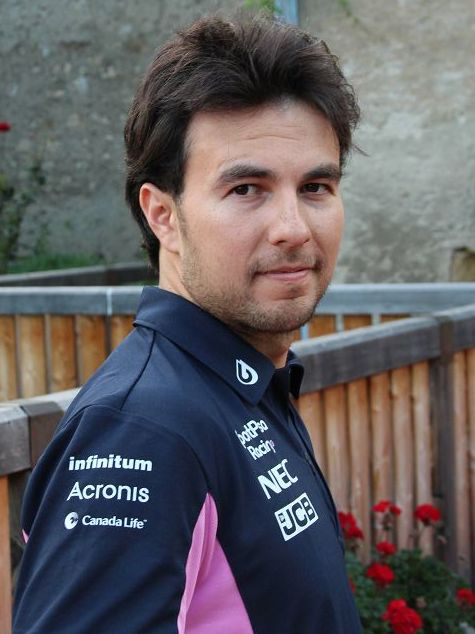

História
A Red Bull Racing, popularmente conhecida como Red Bull ou pela sua abreviação RBR e atualmente competindo como Oracle Red Bull Racing, é uma equipe de automobilismo baseada no Reino Unido que compete no Campeonato Mundial de Fórmula 1 sob uma licença austríaca. A equipe disputou a categoria sob uma licença britânica entre 2005 e 2006 e compete sob uma licença austríaca desde 2007. É uma das duas equipes de Fórmula 1 de propriedade da empresa de bebidas Red Bull GmbH, sendo a outra a Scuderia AlphaTauri. A Red Bull Racing foi criada após a Red Bull comprar a equipe Jaguar Racing no final de 2004, e é gerenciada por Christian Horner desde sua formação em 2005.
Na temporada de 2006, conseguiu o seu primeiro pódio com o terceiro lugar de David Coulthard no Grande Prêmio de Mônaco, e três anos depois, no Grande Prêmio da China de 2009, sua primeira pole position e vitória com Sebastian Vettel. Entre 2010 e 2013, a Red Bull dominou a Fórmula 1, com quatro títulos de construtores enquanto Vettel conquistava o tetracampeonato. A equipe voltou a vencer o campeonato de pilotos em 2021 com Max Verstappen.
Pilotos
-
Max Verstappen

- Nacionalidade: Holanda
- Idade: 25 anos
- Corridas: 171
- Vitórias: 41
- Pódios: 85
- Campeão: 2 vezes
-
Sergio Perez
- Nacionalidade: México
- Idade: 33 anos
- Corridas: 244
- Vitórias: 6
- Pódios: 30
- Campeão: 0 vez
*Dados do dia 26/06/2023